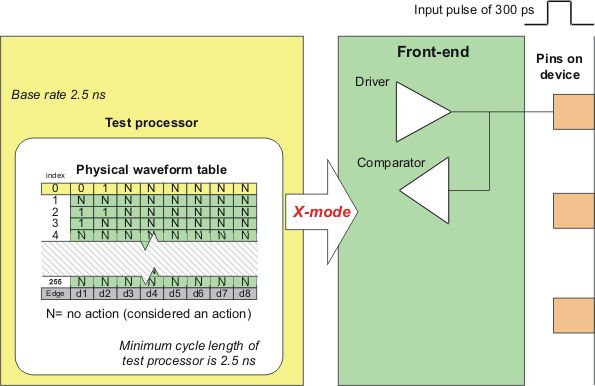
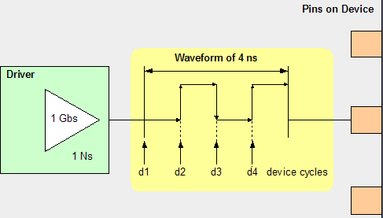
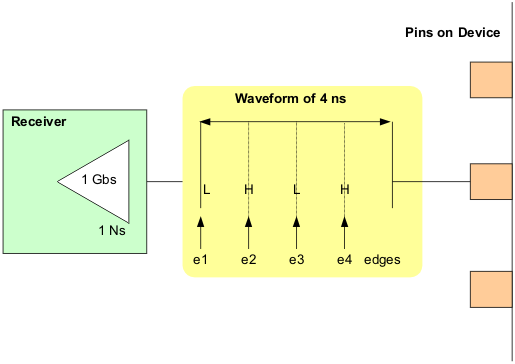

Test system front-end involvement in using x-modes
The base rate defines how fast the test system clocks the test system cycle. The test system cycle has a minimum length of 2.5 ns, which makes 2.5 ns the base rate of the test system.
However, the drivers and receivers of the test system have a much higher bandwidth. For typical voltage swings on a device, the drivers of the test system are capable of driving a pulse of 300 ps even though the test system cycle is 4 ns. The drivers and receivers at the front-end of the test system are able to create four different levels in every test system cycle. To make use of these higher frequencies, x-modes are used:

A device cycle containing one pulse (represented by a pair of drive edges) could occur four times within a tester cycle if eight drive edges are used. Each edge is the beginning of a device cycle. The greater the "x" value of the x-mode, the more edges are needed per test system cycle.
The edges required per test system cycle for different x-modes is shown in the table below.
X-mode |
Edges required per test system cycle |
|---|---|
x1 mode |
1 |
x2 mode |
2 |
x3 mode |
3 |
x4 mode |
4 |
x6 mode |
6 |
x8 mode |
8 |
Drive action
The driver of the test system is capable of generating four device cycles in one test system cycle (see following figure).

Receive action
The receiver of the test system is capable of generating four device cycles in one test system cycle (see following figure).
